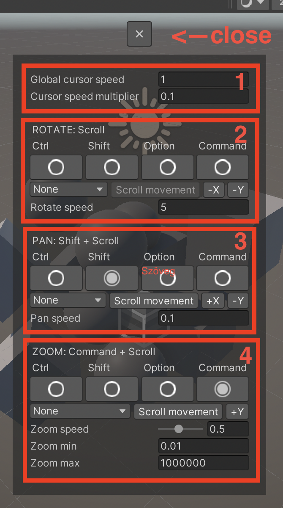

TrackpadPro - Advanced SceneView controls
Thank you for using my asset, I hope it will live up to its promise!
Getting started
In order to use TrackpadPro we need to do a few basic steps:
- Import the asset into your project
- Close the Scene View tab if opened
- Go to View menu and select Scene View (TPP)
- Adjust your layout to meet your requirements
- (Optional) Save your editor layout
Basic usage
If you happy with the blender default controls then you pretty much done!
You can use the following bindings by default:
- Scroll (two finger move): Rotate the view around the pivot point
- Shift + Scroll: Pan the view (moves the pivot point)
- Command + Scoll: Zooms in and out
Advanced bindings and settings
After you clicked you should see the following settings panel:

1 - Cursor speed:
- Global cursor speed: This is the global mouse speed for every action
- Cursor speed multiplier: The speed of the mouse movement compared to scroll movement
2 - Rotate view:
- After the text "ROTATE" you see the current binding
- Below that you can specify wich button needed to perform the action
- Below the action keys you can specify the mouse events (Which mouse button needed, which axis used). You can invert axes here!
- Rotate speed: The speed of rotation around the pivot
3 - Pan view:
- After the text "PAN" you see the current binding
- Below that you can specify wich button needed to perform the action
- Below the action keys you can specify the mouse events (Which mouse button needed, which axis used). You can invert axes here!
- Pan speed: The speed of pan movement
4 - Zoom view:
- After the text "ZOOM" you see the current binding
- Below that you can specify wich button needed to perform the action
- Below the action keys you can specify the mouse events (Which mouse button needed, which axis used). You can invert axes here!
- Zoom speed: The speed of zoom movement
- Zoom min: The minimum amount of zoom
- Zoom max: The maximum amount of zoom